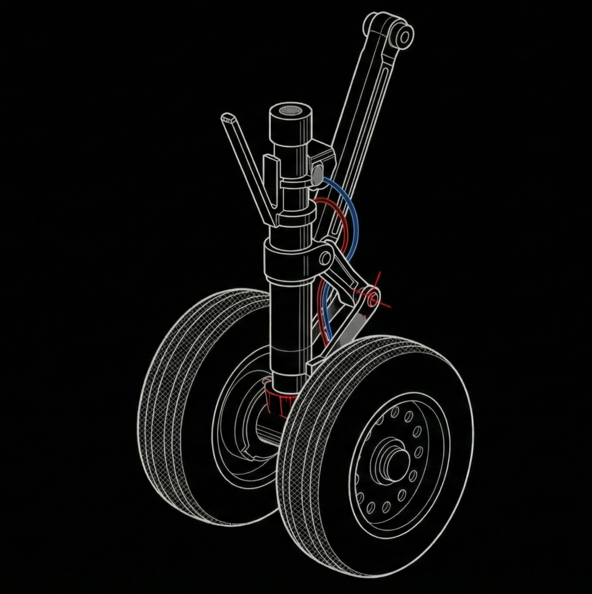

Landing Gear Analysis
Active Process (Fall 2025)
Solid Mechanics Design Project
Currently leading the design and analysis of a nose landing gear assembly for the MEMS 3530 Final Project. The objective is to architect a mechanical system with at least 4 load-bearing components, analyzing failure modes under complex loading scenarios.
- System Simplification: Reduced the landing gear geometry into analyzable primitives. Modeled the main strut as a beam in bending and the axle as a shaft in torsion/bending to apply Euler-Bernoulli beam theory[cite: 12, 56].
- Loading & Assumptions: Justified assumptions for a "hard landing" scenario (3g impact load). Simplified boundary conditions to fixed supports at the trunnion and point loads at the axle extremities[cite: 13, 19].
- Material Selection: Selected Al 7075-T6 for the strut (high strength-to-weight) and 4340 Steel for the axle (fatigue resistance), assigning properties from standard tables.
- Failure Analysis: Determining the extent of initial yield using Von Mises criteria. Calculating safety factors against plastic deformation for each of the 4 critical load-bearing elements.
Load Path & Failure Modes
>> Critical Components
[1] Main Strut
COMPRESSION / BENDING
[2] Wheel Axle
SHEAR / BENDING
[3] Drag Brace
UNIAXIAL TENSION
[4] Trunnion Pin
PURE SHEAR
Force Transmission
GROUND REACTION
3G IMPACT LOAD
AXLE
BENDING MOMENT
MAIN OLEO STRUT
COMBINED LOADING
CRITICAL BUCKLING ZONE
TRUNNION
DRAG BRACE
Tech Stack
ANSYS
Solid Mechanics
Material Science
Failure Criteria
Current Status
Initial simplified hand calculations complete. Developing FEA model to validate yield assumptions on the axle-strut interface.